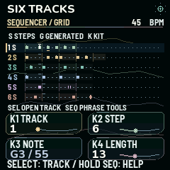
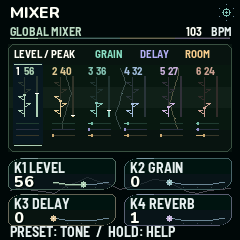

Start here · FM-1 version 2.2 · About 10 minutes
Your first piece.
A world of your own.
Learn one control at a time. You can follow this route in the Web Studio without owning an FM-1, then use the same labelled buttons and knobs on the device.

STEP 01 / 06
1 · Listen to a Biome
- In Web Studio choose Play in browser, then Start instrument. Start at a comfortable listening level.
- Choose Velvet Mist in the Biome selector and press Play. A Biome contains all the voices, patterns and effects for a musical starting point.
- On the FM-1, use HOME to reach Biomes, browse with K2 or PRESET, and load with SEL. Press PLAY to listen.
You can let generative patterns evolve freely. Journey arrangement is optional; it is not needed for this lesson.
STEP 02 / 06
2 · Get to know one voice
- Use SELECT to choose a track. SEL mutes or unmutes the selected track. Try removing and restoring one voice while the others play.
- Press EDIT to reach Sound. Turn K1 slowly to change Tone, then return it to a setting you like. PRESET chooses a named sound; ALGO changes its sound model.
- Return to HOME and move a live macro gently. Listen to the result before moving another control.
On the hardware, hold EDIT, SEQ, FX or GLO for its help. Release it, then tap to leave the help; releasing a long hold does not also trigger a short press.

STEP 03 / 06
3 · Make the pattern your own
- Tap SEQ until Sequencer / Grid. K1 selects a track, K2 selects a step, K3 changes its note and K4 changes pattern length.
- Make a small change to a melodic track. Try a length of 12 on one track and 16 on another: their relationship changes over time.
- Press SEL to open the selected track’s sequence page. Here REC cycles note-entry modes. Return it to Off when finished.
Want to start from silence instead? Choose Blank, then follow Walkthrough II · Write a part.

STEP 04 / 06
4 · Give it some room
- Tap EDIT to reach Global Mixer. Choose the voice with SELECT. Raise its reverb send a little with K4.
- Tap FX to reach Shared Space. K3 sets the room tail; K4 sets the shared effect return. Increase them gently while listening.
- Compare the result with less reverb. A dry bass and a spacious upper voice can leave more room than turning every send up.
For slow movement between two captured settings, continue later with Biome Drift. It is separate from choosing a different factory Biome.

STEP 05 / 06
5 · Keep your own version
In the browser: stop playback, switch to Shape a Biome, then choose Export patch. Keep the downloaded file. Import patch opens it later. Browser User Banks are local to that browser; exporting protects your work if its local data is cleared.
On the FM-1:
- Stop playback and use Internal MIDI clock. From HOME’s Tracks or Biomes view, press GLO to open User Banks.
- Choose a slot with K1 and Biome with K2. Use K4 for the name cursor and PRESET for letters.
- Press SAVE. If the slot is occupied, read the replacement prompt and confirm with SEL. Wait for USER SLOT SAVED.
Saving a User Biome keeps your own variation. Factory Biomes remain available. On the Live Atlas, SAVE keeps the current project and preferences; it does not create a new named library entry. Granular audio is not stored.

STEP 06 / 06
6 · Choose your next adventure
- Take the illustrated tour for patterns, Living Links, Journey and recording.
- Read the full function reference when you need a particular control, MIDI setting or page.
- Download the complete 62-page manual for reading offline or printing.
- Try an Itinera dream for a self-playing musical journey.
Lost? On the FM-1, HOME returns to performance views. Hold EDIT, SEQ, FX or GLO to read its help. You do not need to learn every page before making music.